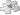

Economy of Madagascar
This article has multiple issues. Please help improve it or discuss these issues on the talk page. (Learn how and when to remove these template messages)
|
The capital of Madagascar, Antananarivo | |
| Currency | Malagasy ariary (MGA) |
|---|---|
| Calendar year | |
Trade organisations | WTO, African Union |
Country group |
|
| Statistics | |
| Population | |
| GDP | |
GDP growth | |
GDP per capita | |
GDP by sector | services (60.3%), agriculture (23,7%), industry (16%) (2017 est.) |
| 7.8% (2017 est.) | |
| 42.6 medium (2012)[6] | |
Labour force | |
| Unemployment | |
Main industries | meat processing, soap, breweries, tanneries, sugar, textiles, glassware, cement, automobile manufacturing, paper, petroleum, tourism, |
| External | |
| Exports | $2.35 billion (2017 est.)[10] |
Export goods | coffee, vanilla, shellfish, sugar, cotton cloth, clothing, chromite, petroleum products |
Main export partners | |
| Imports | $3.235 billion (2017 est.)[10] |
Import goods | capital goods, consumer goods, food |
Main import partners | |
| Public finances | |
| USD $3.914 billion (2017 est.) | |
| Revenues | USD $1.292 billion |
| Expenses | USD $1.725 billion |
| Economic aid | recipient: $838 million (1997) |
All values, unless otherwise stated, are in US dollars. | |
{kind=link}
{kind=link}
The economy of Madagascar is US$9.769 billion by gross domestic product as of 2020, being a market economy and is supported by an agricultural industry and emerging tourism, textile and mining industries. Malagasy agriculture produces tropical staple crops such as rice and cassava, as well as cash crops such as vanilla and coffee.
Malagasy exports from customs protocol in some areas, notably the United States and the European Union. These exemptions have supported the growth of the Malagasy textile industry. Despite natural resources and developing industries, the 2009 Malagasy political crisis—considered by the international community to be an illegal coup[12]—deterred foreign investments in Madagascar and caused the Malagasy economy to decline.[13] Foreign investments have resumed following the resumption of elections in early 2014.[citation needed] Madagascar is a least developed country according to United Nations.
History
[edit]Over the years, successive French colonial and independence-era governments have sought to modernize Madagascar's economy.[14] The first modern land use projects were established by French settlers or Creole immigrants from the Mascarene Islands in the nineteenth and twentieth centuries.[14] They introduced cash crops such as coffee, sugarcane, vanilla, cloves, and sisal for export.[14] They also built small-scale mines to exploit the island's graphite, chromite, and uranium resources.[14] To facilitate the processing and marketing of these commodities, the immigrants established a number of financial and commercial enterprises and built a small, modern railroad system.[14] They then brought some Malagasy into this modern sector of the economy, either as wage laborers and sharecroppers on the foreign-owned plantations, or as low-level employees in the civil service or business enterprises. The foreign owners and managers, however, retained almost all of the benefits from these operations.[14]
After independence the Tsiranana regime did little to change the French domination of the modern sector of the economy, despite increasing outrage at this continued economic dependence.[14] This anger, together with growing concern over an unequal distribution of wealth that left the southern and western parts of the island in relative poverty, caused the ouster of Tsiranana in 1972 and a shift in economic policy.[14] The new military regime led by Ramanantsoa cut most ties with France and began to Malagachize the economy. Slow progress toward this goal, however, helped to precipitate the end of the Ramanantsoa regime in mid-1975.[14] Only with the rise of Ratsiraka to the presidency later that year did the takeover of formerly French-dominated enterprises begin in earnest.[14]
Ratsiraka's policy of "revolution from above" went beyond confiscating or buying out foreign firms and turning them over to Malagasy ownership; he intended to socialize the economy by nationalizing major enterprises.[14] The state acquired majority or minority ownership in nearly all large financial, transportation, marketing, mining, and manufacturing enterprises.[14] Firms left under private control were required to buy and sell at statecontrolled prices, and the state closely monitored the repatriation of profits.[14] In the rural sector, Ratsiraka aimed to establish local farming cooperatives.[14] Almost as important as this institutional reform was the regime's intention, announced in an economic plan for the 1978-80 period, to increase dramatically the level of government capital investment in all sectors of the economy in order to improve the availability of goods and services to all.[14]
By the start of the 1980s, however, Ratsiraka's attempt to fashion viable socialist institutions and to stimulate the economy through increased investment had failed to improve economic production and welfare.[14] Economic growth throughout the 1970s had not kept pace with the expanding population.[14] Despite the availability of significant agricultural and mineral resources, the economy was less productive than at the start of the decade when the average per capita income was already among the lowest in the world.[14] The only apparent effect of the enhanced level of investment, which reached all-time highs in the 1978-80 period, was to put the country deeply in debt to foreign creditors and, therefore, pave the way for a series of structural adjustment agreements signed with the IMF and the World Bank during the 1980s and the early 1990s.[14] Such agreements were necessary because as a 1993 World Bank study pointed out, between 1971 and 1991 the per capita income of Malagasy dropped 40 percent.[14]
Eventually admitting that adoption of the socialist model of economic centralization and state control was a mistake, the Ratsiraka regime in 1980 initiated a return to a more classic liberal economic model that the Zafy regime wholeheartedly adopted following its inauguration in 1993.[14] The post-1980 Ratsiraka and Zafy regimes have overseen the privatization of parastatals, the disbanding of agricultural marketing boards, the ratification of more liberal investment codes favoring foreign investment, the privatization of the banking industry, diversification of traditional, primary-product exports, and greater investment in food production.[14] The Zafy regime has made reinvigoration of the Malagasy economy its number-one priority.[14]
As of 1994, the majority of Malagasy continued to earn their livelihoods in ways fundamentally unchanged from those of their ancestors — small-scale farms supporting traditional irrigated rice cultivation, dryland farming of cassava and other foods, zebu cattle herding, or the raising of cash crops.[14]
Agriculture
[edit]Madagascar produced, in 2018:
- 4 million tons of rice;
- 3.1 million tons of sugarcane;
- 2.5 million tons of cassava;
- 1 million tons of sweet potato;
- 388 thousand tons of vegetable;
- 383 thousand tons of banana;
- 300 thousand tons of mango (including mangosteen and guava);
- 257 thousand tons of potato;
- 230 thousand tons of taro;
- 215 thousand tons of maize;
- 93 thousand tons of pineapple;
- 86 thousand tons of beans;
- 83 thousand tons of orange;
- 73 thousand tons of coconut;
In addition to smaller productions of other agricultural products, like coffee (57 thousand tons), clove (23 thousand tons), cocoa (11 thousand tons), cashew (7 thousand tons) and vanilla (3 thousand tons).[15]
Agriculture, including fishing and forestry, is Madagascar's largest industry and employs 82% of its labor force.[16] Madagascar's varied climate, ranging from tropical along the coasts, moderate in the highlands and arid in the south, allows for the cultivation of tropical crops such as rice, cassava, beans and bananas.[16] In 2011, agricultural products—especially cloves, vanilla, cacao, sugar, pepper, and coffee—accounted for Madagascar's top twelve exports by value.[17] Madagascar produces the largest vanilla harvest in the world and Malagasy vanilla accounts for 80-85% of the global vanilla market.[18]
Fishing
[edit]The fishing industry is present with 66 industrial fishing vessels. Fees & taxes for fishing licences are estimated at 3,6 billion Ariary (US$ 80 million) for 2023.[19]
Textiles
[edit]Exports from Madagascar's Export Processing Zones, located around Antananarivo and Antsirabe, account for the majority of garment exports[20] and are largely exempt from customs restrictions in the United States under the African Growth and Opportunity Act (AGOA)[21] and in the European Union under the Everything but Arms (EBA) agreement.[22]
Mining
[edit]A small but growing part of the economy is based on mining of ilmenite, with investments emerging in recent years, particularly near Tulear and Fort Dauphin.[23] Mining corporation Rio Tinto Group started production at its Fort Dauphin Mandena mine in January 2009,[24] following several years of preparation. The mining project is highly controversial, with Friends of the Earth and other environmental organizations filing reports to detail their concerns about the mine's effect on the environment and local communities.[25] Gemstone mining is also an important part of Madagascar's economy.
Several major projects are underway in the mining and oil and gas sectors that, if successful, will give a significant boost. In the mining sector, these include the development of coal at Sakoa and nickel near Tamatave. The Ambatovy mine (nickel & cobalt - Sherrit International 40%, Sumitomo 27.5%, Korea Resources 27.5%, SNC-Lavalin 5%) is a huge operation and has cost US$4.76 million to date [26] and is due to start production in 2011. In oil, Madagascar Oil is developing the massive onshore heavy oil field at Tsimiroro and ultra heavy oil field at Bemolanga.
{kind=link}
Investment climate
[edit]This article may contain an excessive amount of intricate detail that may interest only a particular audience. (March 2015) |
{kind=link}
Following the 2002 political crisis, the government attempted to set a new course and build confidence, in coordination with international financial institutions and donors. Madagascar developed a recovery plan in collaboration with the private sector and donors and presented it at a "Friends of Madagascar" conference organized by the World Bank in Paris in July 2002. Donor countries demonstrated their confidence in the new government by pledging $1 billion in assistance over five years. The Malagasy Government identified road infrastructure as its principal priority and underlined its commitment to public-private partnership by establishing a joint public-private sector steering committee.
The Madagascar-U.S. Business Council was formed as a collaboration between the United States Agency for International Development (USAID) and Malagasian artisan producers in Madagascar in 2002.[27] The U.S.-Madagascar Business Council was formed in the United States in May 2003, and the two organisations continue to explore ways to work for the benefit of both groups.
The government of former President Marc Ravalomanana was aggressively seeking foreign investment and had planned to tackle many of the obstacles to such investment, including combating corruption, reforming land-ownership laws, encouraging study of American and European business techniques, and active pursuit of foreign investors. President Ravalomanana rose to prominence through his agro-foods TIKO company, and is known for attempting to apply many of the lessons learned in the world of business to running the government. Prior to Ravalomanana's resignation, concerns had arisen about the conflict of interest between his policies and the activities of his firms. Most notable among them the preferential treatment for rice imports initiated by the government in late 2004 when responding to a production shortfall in the country.
Madagascar's appeal to investors stems from its competitive, trainable work force. More than 200 investors, particularly garment manufacturers, were organized under the country's export processing zone (EPZ) system since it was established in 1989. The absence of quota limits on textile imports to the European market under the Lomé Convention helped stimulate this growth.
{kind=link}
Growth in output in 1992–97 averaged less than the growth rate of the population. Growth has been taken away by a decline in world coffee demand, and the erratic commitment of the government to economic reform.[28][29] During a period of solid growth from 1997 to 2001, poverty levels remained stubbornly high, especially in rural areas. A six-month political crisis triggered by a dispute over the outcome of the presidential elections held in December 2001 virtually halted economic activity in much of the country in the first half of 2002. Real GDP dropped 12.7% in 2002, inflows of foreign investment dropped sharply, and the crisis tarnished Madagascar's budding reputation as an AGOA standout and a promising place to invest. After the crisis, the economy rebounded with GDP growth of over 10% in 2003. Currency depreciation and rising inflation in 2004 hampered economic performance, but growth for the year reached 5.3%, with inflation reaching around 25% at the end of the year. In 2005 inflation was brought under control by tight monetary policy of raising the Taux Directeur (central bank rate) to 16% and tightening reserve requirements for banks. Thus growth was expected to reach around 6.5% in 2005.
During Ravalomanana's presidency, the government adopted a series of business laws and regulations, including the commercial companies law[30] (2003), labor law[31] (2003), regulations on the application of commercial companies law[32] (2004), public procurement law[33] (2004), competition law[34] (2005), foreign exchange law[35] (2006), investment law[36] (2007), and free zones and free enterprises law[37] (2007).
Food security, vulnerability and risk management
[edit]{kind=link}
Despite a wealth of abundant and diverse natural resources, Madagascar is one of the world's poorest countries. Madagascar holds great potential for agricultural development, mainly due to the large variety of soil types and climatic diversity. Nevertheless, natural hazards (cyclones, drought, locust invasions) combined with old-fashioned farming practices limit production.
The standard of living of the Malagasy population has been declining dramatically over the past 25 years. The country has gone from being a net exporter of agricultural products in the 1960s to a net importer since 1971. Inappropriate traditional agricultural methods cause soil to erode and soil quality to decline, and the basis of survival for Madagascar's people is under serious threat.[38]
Energy
[edit]|  | This section needs expansion. You can help by adding to it. (September 2022) |
{kind=link}
{kind=link}
As of 2018, only 15% of the population of Madagascar has access to electricity[39]. By 2023, this has increased to 34% [40]. Madagascar has a technically feasible hydropower potential of about 180,000 GWh. Less than 1% has been developed so far, with 162 MW of installed hydro capacity producing 61% of the nations' electricity [41]. The country has enormous potential for exploiting solar power, but general infrastructure is still lacking.
Poverty reduction
[edit]{kind=link}
In 2000, Madagascar embarked on the preparation of a Poverty Reduction Strategy Paper (PRSP) under the Heavily indebted poor countries (HIPC) Initiative. The boards of the IMF and of the World Bank concurred in December 2000 that the country was eligible under the HIPC Initiative, and Madagascar reached the decision point for debt relief. On March 1, 2001, the IMF Board granted the country $103 million for 2001–03 under the Poverty Reduction and Growth Facility (PRGR). Resources were intended for improving access to health, education, rural roads, water, and direct support to communities. In addition, on March 7, 2001, the Paris Club approved a debt cancellation of $161 million. On February 28, 2001, the African Development Bank (ADB) approved under the HIPC a debt cancellation of $71.46 million and granted in June 2001 an additional credit of $20 million to fight against AIDS and poverty.
Partly as a result of these credits but also as a result of previous reforms, average GDP growth exceeded the population growth rate of 2.8% in 1997 (3.5%), 1998 (3.9%), 1999 (4.7%) and 2000 (4.8%).
In October 2004, the boards of the IMF and the World Bank determined that Madagascar had reached the completion point under the enhanced HIPC Initiative.
Child labour
[edit]{kind=link}
Children are common in small scale mines of Madagascar. Some children are involved in salt mining, quarry work, gem and gold ore collection. About 58% of children in these mines are younger than age 12. According to IPEC, Child labourers in these mines usually come from families who are in precarious economic situation.[42]
According to a United States-based 2010 report, about 22% of Madagascar children aged 5–14, or over 1.2 million work. Another French based group suggests Madagascar child labour exceeds 2.4 million, with over 540,000 children aged 5–9 working. About 87% of the child labour is in agriculture, mainly in the production of vanilla, tea, cotton, cocoa, copra (dried meat of coconut), sisal, shrimp harvest and fishing. Malagasy children engaged in domestic service work an average of 12 hours per day.[43][44]
Several internationally funded efforts were involved in Madagascar to help reduce and prevent child labour. However these stopped, after the government change following 2009 coup, because much of the funding from international donors, including the African Union, European Union, World Bank and the United States, was suspended.Facts and figures
[edit]Main indicators
[edit]The following table shows the main economic indicators in 1980–2023.[45]
| Year | GDP (in billion US$ PPP) |
GDP per capita (in US$ PPP) |
GDP (in billion US$ nominal) |
GDP growth (real) | Inflation (in Percent) | Government debt (in % of GDP) |
|---|---|---|---|---|---|---|
| 1980 | 8.867 | 1,021.7 | 5.202 | 0.788 | 18.278 | n/a |
| 1981 | 8.755 | 982.4 | 4.759 | −9.800 | 30.457 | n/a |
| 1982 | 9.119 | 996.6 | 4.785 | −1.900 | 31.907 | n/a |
| 1983 | 9.562 | 1,017.7 | 4.686 | 0.900 | 19.469 | n/a |
| 1984 | 10.081 | 1,045.0 | 3.906 | 1.760 | 9.720 | n/a |
| 1985 | 10.520 | 1,062.0 | 3.803 | 1.156 | 10.566 | n/a |
| 1986 | 10.942 | 1,075.8 | 4.348 | 1.960 | 14.492 | n/a |
| 1987 | 11.345 | 1,086.2 | 3.213 | 1.175 | 15.461 | n/a |
| 1988 | 12.145 | 1,132.5 | 3.189 | 3.407 | 26.338 | n/a |
| 1989 | 13.135 | 1,192.9 | 3.176 | 4.075 | 9.017 | n/a |
| 1990 | 14.053 | 1,243.0 | 3.931 | 3.129 | 11.859 | 92.701 |
| 1991 | 13.612 | 1,172.6 | 3.255 | −6.306 | 8.540 | 113.835 |
| 1992 | 14.087 | 1,181.8 | 3.715 | 1.181 | 14.567 | 110.875 |
| 1993 | 14.724 | 1,203.0 | 4.063 | 2.100 | 9.990 | 105.192 |
| 1994 | 15.032 | 1,192.3 | 3.522 | −0.042 | 38.992 | 95.963 |
| 1995 | 15.605 | 1,201.6 | 3.838 | 1.679 | 49.036 | 95.837 |
| 1996 | 16.233 | 1,213.4 | 4.932 | 2.154 | 19.761 | 98.716 |
| 1997 | 17.123 | 1,242.5 | 4.263 | 3.693 | 4.492 | 89.740 |
| 1998 | 17.994 | 1,267.5 | 4.402 | 3.917 | 6.210 | 108.460 |
| 1999 | 19.105 | 1,306.5 | 4.278 | 4.699 | 7.189 | 104.115 |
| 2000 | 20.408 | 1,354.9 | 4.629 | 4.457 | 11.570 | 90.212 |
| 2001 | 22.116 | 1,425.4 | 5.438 | 5.980 | 7.917 | 82.144 |
| 2002 | 19.674 | 1,230.9 | 5.352 | −12.408 | 16.499 | 86.693 |
| 2003 | 22.025 | 1,337.7 | 6.372 | 9.785 | −1.704 | 85.862 |
| 2004 | 23.805 | 1,403.6 | 5.065 | 5.257 | 13.956 | 81.896 |
| 2005 | 25.719 | 1,472.1 | 5.859 | 4.756 | 18.364 | 74.366 |
| 2006 | 27.944 | 1,552.8 | 6.396 | 5.399 | 10.766 | 32.226 |
| 2007 | 30.338 | 1,636.6 | 8.525 | 5.711 | 10.288 | 28.210 |
| 2008 | 32.996 | 1,727.9 | 10.725 | 6.713 | 9.297 | 31.010 |
| 2009 | 31.886 | 1,621.0 | 9.617 | −3.979 | 8.954 | 34.857 |
| 2010 | 32.469 | 1,602.4 | 9.983 | 0.619 | 9.247 | 32.341 |
| 2011 | 33.667 | 1,613.0 | 11.552 | 1.578 | 9.483 | 29.947 |
| 2012 | 34.211 | 1,591.2 | 11.579 | 3.011 | 5.714 | 30.435 |
| 2013 | 35.257 | 1,591.9 | 12.424 | 2.300 | 5.826 | 36.243 |
| 2014 | 36.702 | 1,608.7 | 12.523 | 3.339 | 6.080 | 37.848 |
| 2015 | 37.486 | 1,595.1 | 11.323 | 3.132 | 7.404 | 44.062 |
| 2016 | 39.997 | 1,652.2 | 11.849 | 3.993 | 6.056 | 40.281 |
| 2017 | 40.515 | 1,624.7 | 13.176 | 3.933 | 8.590 | 40.130 |
| 2018 | 42.814 | 1,667.6 | 13.760 | 3.194 | 8.598 | 42.896 |
| 2019 | 45.504 | 1,715.5 | 14.105 | 4.411 | 5.623 | 41.253 |
| 2020 | 42.808 | 1,565.8 | 13.051 | −7.138 | 4.188 | 52.198 |
| 2021 | 47.298 | 1,678.5 | 14.555 | 5.740 | 5.819 | 52.029 |
| 2022 | 52.636 | 1,817.4 | 15.149 | 4.000 | 8.157 | 55.129 |
| 2023 | 56.754 | 1,906.6 | 15.763 | 4.000 | 10.500 | 54.026 |
Other data
[edit]Household income or consumption by percentage share:
lowest 10%:
2.3%
highest 10%:
34.9% (1993)
Industrial production growth rate: 5% (1999 est.)
Electricity – production: 1.35 billion kWh (2009 est.)
Electricity – production by source:
fossil fuel:
69.5%
hydro:
30.5%
nuclear:
0%
other:
0% (2009)
Electricity – consumption: 1.256 billion kWh (2009 est.)
Electricity – exports: 0 kWh (2010)
Electricity – imports: 0 kWh (2010)
Exchange rates: Malagasy ariary (MGA) per US dollar - 2,195 (2012 est.) 2,025.1 (2011 est.) 2,090 (2010 est.) 1,956.2 (2009) 1,654.78 (2008)
See also
[edit]- Economy of Africa
- Illegal logging in Madagascar
- Tourism in Madagascar
- United Nations Economic Commission for Africa
- List of companies of Madagascar
References
[edit]- ^ "World Economic Outlook Database, April 2023". IMF.org. International Monetary Fund. Retrieved 23 May 2023.
- ^ "World Bank Country and Lending Groups". datahelpdesk.worldbank.org. World Bank. Retrieved 29 September 2019.
- ^ The World Factbook
- ^ a b c IMF
- ^ a b c d "World Economic Oulook April 2023 - Statistical Appendix Tables Part A - Table A4. Emerging Market and Developing Economies: Real GDP". International Monetary Fund. p. 147. Retrieved 5 December 2020.
- ^ "Gini index (World Bank estimate) - Madagascar | Data".
- ^ "Human Development Index (HDI)". hdr.undp.org. HDRO (Human Development Report Office) United Nations Development Programme. Retrieved 23 November 2022.
- ^ "Inequality-adjusted Human Development Index (IHDI)". hdr.undp.org. HDRO (Human Development Report Office) United Nations Development Programme. Retrieved 23 November 2022.
- ^ "Madagascar Unemployment rate - Economy".
- ^ a b "Madagascar Economy 2020, CIA World Factbook".
- ^ a b "Madagascar Economy 2023, CIA World Factbook". 3 April 2024.
- ^ "'SADC does not, cannot recognise Rajoelina'". Independent Online. Agence France-Presse. 19 March 2009.
- ^ Republic of Madagascar (3 June 2014). "Letter of Intent, Memorandum of Economic and Financial Policies, and Technical Memorandum of Understanding" (PDF). International Monetary Fund. p. 4. Retrieved 25 February 2015.
- ^ a b c d e f g h i j k l m n o p q r s t u v w x Schraeder, Peter J. (1995). "Madagascar: Government Policy and Intervention". In Metz, Helen Chapin (ed.). Indian Ocean: five island countries (3rd ed.). Washington, D.C.: Federal Research Division, Library of Congress. pp. 55–57. ISBN 0-8444-0857-3. OCLC 32508646.
 This article incorporates text from this source, which is in the public domain.
This article incorporates text from this source, which is in the public domain.{{cite encyclopedia}}: CS1 maint: postscript (link) - ^ Madagascar production in 2018, by FAO
- ^ a b United States of America. "The World Factbook". Central Intelligence Agency. Retrieved 2 March 2015.
- ^ United Nations. "Commodities by Country". FAOSTAT. Food and Agriculture Organization of the United Nations. Archived from the original on 16 February 2016. Retrieved 26 February 2015.
- ^ The Economist (18 March 2018). "Why there is a worldwide shortage of vanilla". The Economist. p. 1. Retrieved 26 November 2020.
- ^ Madagascar-tribune.com 3.6 milliard d'ariary de Redevance
- ^ "export.gov". www.export.gov. Retrieved 2018-06-26.
- ^ United States of America. "AGOA Eligibility". International Trade Administration. Retrieved 28 February 2015.
- ^ European Union (30 April 2013). "Everything But Arms (EBA) – Who benefits?" (PDF). European Commission: Trade. Archived from the original (PDF) on 20 December 2018. Retrieved 28 February 2015.
- ^ Madagascar – Mining: Heavy Minerals Mining Archived 2008-03-31 at the Wayback Machine. Mbendi.co.za. Retrieved on 2012-05-28.
- ^ Media releases – Rio Tinto starts ilmenite production in Madagascar Archived 2011-09-30 at the Wayback Machine. Rio Tinto. Retrieved on 2012-05-28.
- ^ Rio Tinto's Madagascar mining project. Foe.co.uk. Retrieved on 2012-05-28.
- ^ "Sherritt Provides Update on the Ambatovy Project" (PDF). Archived from the original (PDF) on July 16, 2011. Retrieved 2011-02-01.. sherritt.com (2010-12-17)
- ^ "Made in Madagascar: Exporting Handicrafts to the U.S. Market: a Project with the UN Public-Private Alliance for Rural Development; Final Report", A Project with the UN Public-Private Alliance for Rural Development.
- ^ FAO Statistic Yearbook 2010 – Resources
- ^ The World Bank. Madagascar at a glance, 2/25/11
- ^ "Loi n° 2003-036 sur les sociétés commerciales". mofcom.gov.cn. Retrieved 2019-11-30.
- ^ "Loi n° 2003-044 portant Code du travail". mofcom.gov.cn. Retrieved 2019-11-30.
- ^ "Décret n° 2004-453 fixant les modalités d'application de la Loi sur les sociétés commerciales". mofcom.gov.cn. Retrieved 2019-11-30.
- ^ "Loi n° 2004-009 portant Code des marchés publics". mofcom.gov.cn. Retrieved 2019-11-30.
- ^ "Loi n° 2005-020 sur la concurrence". mofcom.gov.cn. Retrieved 2019-11-30.
- ^ "Loi n° 2006-008 portant Code des changes". mofcom.gov.cn. Retrieved 2019-11-30.
- ^ "Loi n° 2007-036 sur les investissements à Madagascar". mofcom.gov.cn. Retrieved 2019-11-30.
- ^ "Loi n° 2007-037 sur les zones et entreprises franches à Madagascar". mofcom.gov.cn. Retrieved 2019-11-30.
- ^ Deutsche Gesellschaft für Internationale Zusammenarbeit web site
- ^ "The Force of the Sun: Madagascar Embarks on Renewable Energy Production". World Bank. Retrieved 2021-07-29.
- ^ "Madagascar Set to Expand Access to Renewable Energy and Digital Services thanks to $400 Million Credit". World Bank. Retrieved 2024-07-22.
- ^ "ANDRITZ HYDRO country overview". Andritz Hydro. Retrieved 2024-07-22.
- ^ "Child labour in Africa" (PDF). ILO. 2010.
- ^ "2010 Findings on the Worst Forms of Child Labor – U.S. Department of Labor" (PDF). 2011. Archived from the original (PDF) on 15 September 2012. Retrieved 23 July 2012.
- ^ "Enquête nationale sur le travail des enfants à Madagascar, 2007". ILO. 2008.
- ^ "World Economic Outlook Databank". IMF.
Bibliography
[edit]External links
[edit]- Economy of Madagascar at Curlie
- MBendi Madagascar overview
- Madagascar latest trade data on ITC Trade Map
- Why is Madagascar so poor?
The population below the poverty line is 50 percent.[citation needed]}